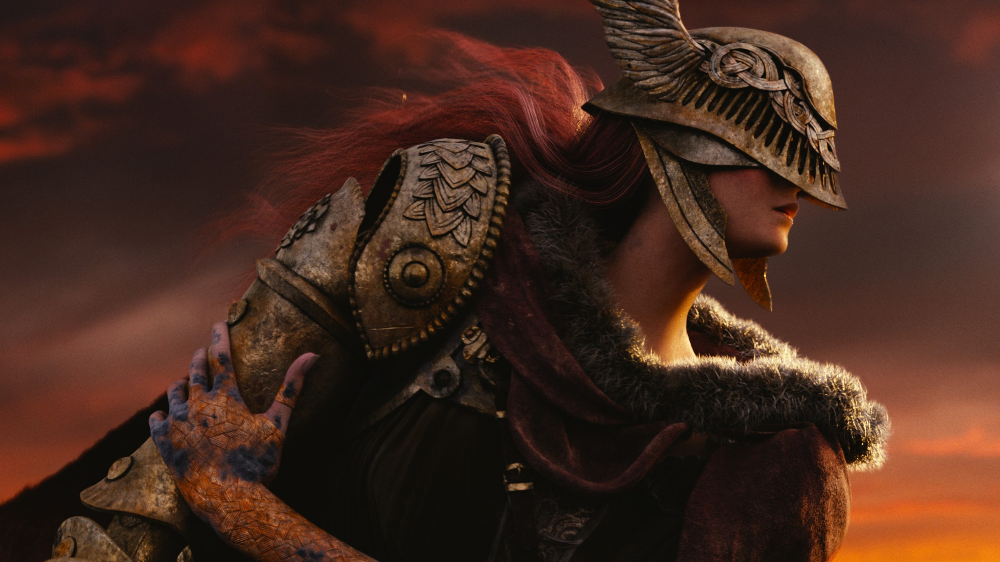
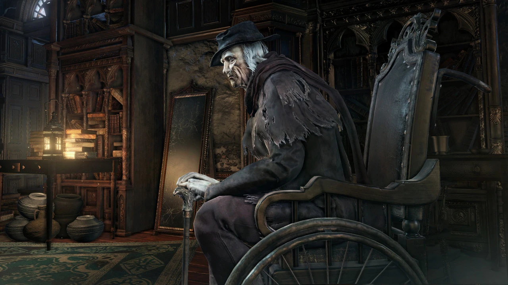
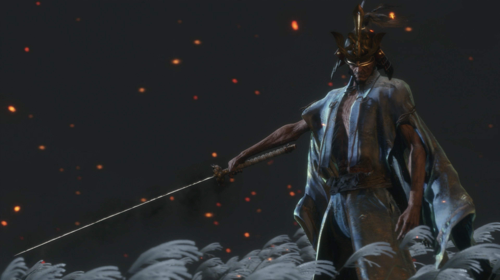

Iconic Characters & Bosses
FromSoftware is renowned for unforgettable characters — from terrifying bosses to mysterious NPCs. Here are a few fan favorites.

Malenia
Blade of Miquella • Elden Ring
"I am Malenia, Blade of Miquella. And I have never known defeat."

Gehrman
The First Hunter • Bloodborne
A wise and weary hunter who guards the Hunter's Dream.

Isshin
The Sword Saint • Sekiro
A legendary warrior who rises from death for one final battle.